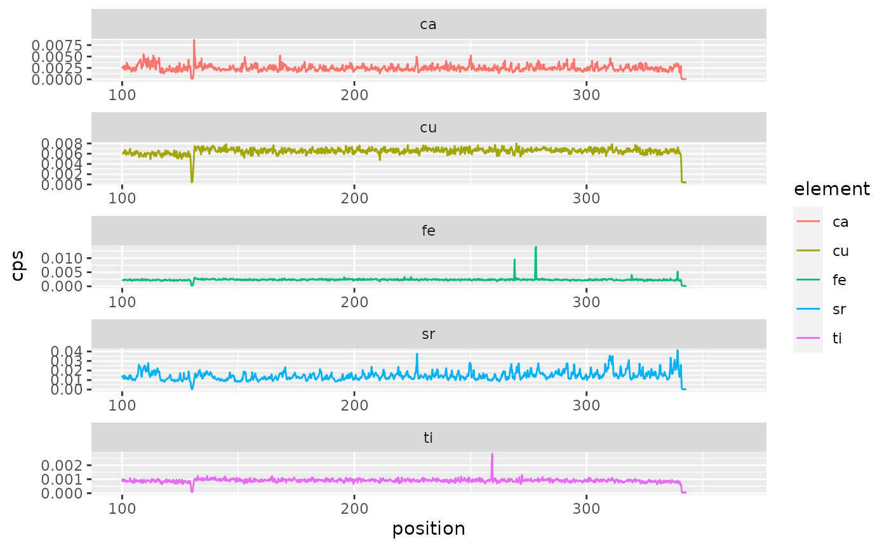

diffabsr functionality
Koen Hufkens
2021-11-21
diffabsr.RmdSetup the specs of the analysis, sensors to use etc. Keep in mind that these settings are dependent on the experiment. Depending on the beamline energy, geometry and other settings these values will need to be changed. The settings below are those for scans of wood cores at 18KeV, with beamline and sensor at 60 degree offset.
rois <- list(
ca = c(360, 380),
fe = c(620, 660),
cu = c(775, 825),
sr = c(1390, 1430),
ti = c(440, 460)
)
channel_positions <- list(
channel_0 = data.frame(
ICR = 39,
OCR = 43,
s = 27
),
channel_1 = data.frame(
ICR = 40,
OCR = 44,
s = 28
),
channel_2 = data.frame(
ICR = 41,
OCR = 45,
s = 29
),
channel_3 = data.frame(
ICR = 42,
OCR = 46,
s = 30
)
)Read in the data (spectra), convert to element counts (density) and finally convert into a tidy format for plotting.
library(diffabsr)
# read in data, and process
spectra <- diffabs_spectra(
file = system.file(package = "diffabsr","extdata/demo.nxs"),
channels = channel_positions)
# get elemental densities for all ROIs (i.e. elements) specified
elements <- diffabs_elements(rois = rois,
spectra = spectra)
# convert the nested list data to tidy data
tidy_elements <- diffabs_tidy(elements)Finally we can plot the time series along a transect using ggplot().
p <- ggplot(data = tidy_elements) +
geom_line(
aes(
position,
cps,
colour = element
)
) +
facet_wrap(~element, ncol = 1, scales = "free")
print(p)
#> Warning: Removed 525 row(s) containing missing values (geom_path).